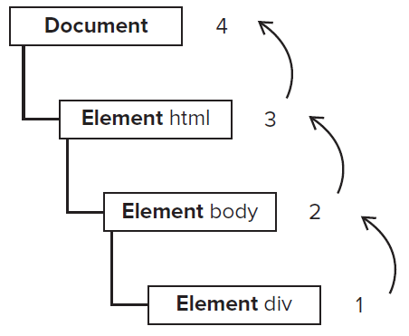
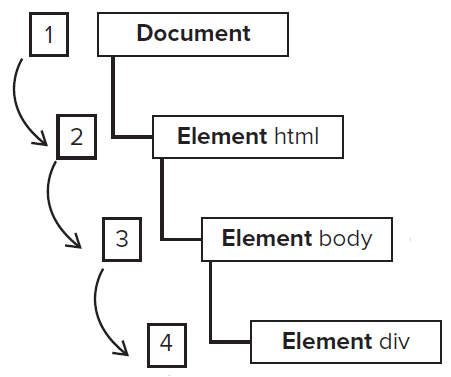

這篇教學介紹瀏覽器事件的運作原理，包含 EventTarget 、 Event Bubbling 、 Event Capturing 、 Event Delegation 。
Event Flow
事件流程 (Event Flow) 指的就是「網頁元素接收事件的順序」。
事件流程可以分成兩種機制：
- 事件冒泡 (Event Bubbling)
- 事件捕獲 (Event Capturing)
事件冒泡 (Event Bubbling)
Event Bubbling 指的是當某個事件發生在某個 DOM element 上（如：點擊），這個事件會觸發 DOM element 的 event handler ，接下來會再觸發他的 parent 的 event handler ，以及 parent 的 parent 的 event handler …直到最上層。
圖片來源： Event Flow: capture, target, and bubbling
事件冒泡指的是「從啟動事件的元素節點開始，逐層往上傳遞」，直到整個網頁的根節點，也就是 document。
事件捕獲 (Event Capturing)
和 Event Bubbling 相反， event 發生在某個 DOM element 上的時候，會從他的最上層 parent 開始觸發 event handler ，再來是倒數第二上層的 event handler ，以此類推，直到觸發事件的 DOM element 本身的 event handler 。
圖片來源： Event Flow: capture, target, and bubbling
事件捕獲則和事件冒泡機制相反。
例如我們看這一個 HTML DOM 結構：
1 | <html> |
當使用者點擊 li 元素時，事件觸發的順序是：
Capturing 捕獲階段：
Document -> <html> -> <body> -> <div> -> <ul> -> <li>
Bubbling 氣泡階段：
<li> -> <ul> -> <div> -> <body> -> <html> -> Document
要檢驗事件流程，我們可以透過 addEventListener() 方法來綁定 click 事件，透過 addEventListener 指定事件的綁定，第三個參數 true / false 分別代表捕獲/ 冒泡 機制，不加參數的話，預設值是 false：
1 | <!DOCTYPE html> |
點一下超連結，console 輸出以下結果：
1 | list capturing 1 |
1 是CAPTURING_PHASE，2 是AT_TARGET，3 是BUBBLING_PHASE。
從這邊就可以很明顯看出，事件的確是從最上層一直傳遞到 target，再從 target 不斷冒泡傳回去，先傳到上一層的#list_item，再傳到上上層的#list。
事件傳遞到我們點擊的超連結（a#list_item_link）本身，在這邊無論你使用addEventListener的第三個參數是true還是false，這邊的e.eventPhase都會變成AT_TARGET。
Capturing 或 Bubbling 的目標執行順序
既然是先捕獲，再冒泡，意思就是無論那些addEventListener的順序怎麼變，輸出的東西應該還是會一樣才對。我們把捕獲跟冒泡的順序對調，看一下輸出結果是否一樣。
1 | // list 的冒泡 |
點一下超連結，console 輸出以下結果：
1 | list capturing 1 |
list_item_link先執行了添加在冒泡階段的 listener，才執行捕獲階段的 listener。
前面有提到，當事件傳遞到點擊的真正對象，也就是 e.target 的時候，無論addEventListener的第三個參數是true還是false，這邊的e.eventPhase都會變成AT_TARGET。
既然已經是AT_TARGET，就不會區分捕獲跟冒泡，執行順序會根據addEventListener的順序來決定，先添加的先執行，後添加的後執行。
關於這些事件的傳遞順序，只需記住兩個原則：
- 先捕獲，再冒泡
- 當事件傳到 target 本身，沒有分捕獲跟冒泡
阻擋事件冒泡傳遞 event.stopPropagation()
如果我們想要阻擋事件向上冒泡傳遞，那麼就可以利用 event object 提供的另一個方法： event.stopPropagation() ，讓事件的傳遞中斷，不會繼續往下傳遞。
根據上面的例子，我添加 event.stopPropagation() 至 #list 的捕獲階段：
1 | // list 的捕獲 |
點一下超連結，console 輸出以下結果：
1 | list capturing 1 |
因為事件的傳遞被停止，所以剩下的 listener 都不會再收到任何事件。
如果在同一個節點上不只一個 listener，其他 listener 還是會被執行。
1 | // list 的捕獲 A |
點一下超連結，console 輸出以下結果：
1 | list capturing-A |
如果要讓其他同一層級的 listener 也不要被執行，可以使用 e.stopImmediatePropagation() ：
1 | // list 的捕獲 A |
點一下超連結，console 輸出以下結果：
1 | list capturing-A |
阻擋預設行為 event.preventDefault()
HTML 部分元素會有預設行為，像是 <a> 的連結，或是表單的 submit 等等…，
如果我們需要在這些元素上綁定事件，那麼可以透過 event.preventDefault() 來取消它們的預設行為。
1 | // list_item_link 的冒泡 |
當點擊超連結的時候，就不會執行原本預設的行為（新開分頁）。event.preventDefault()在之後傳遞下去的事件裡面也會有效果。
1 | // list 的捕獲 A |
就算是把 event.preventDefault() 添加到 #list 的捕獲事件裡面，等之後事件傳遞到#list_item_link的時候，一樣可以取消超連結的預設行為（新開分頁）。
事件委派（Event Delegation）
假設同時有很多 DOM element 都有相同的 event handler ，與其在每個 DOM element 上個別附加 event handler ，不如利用 event bubbling 的特性，統一在他們的 ancestor 的 event handler 處理，可以有效地減少監聽器數量。
假設有一個三個 li 節點的 ul ，接著動態產生剩下的節點資料：
1 | <ul id="list"> |
雖然可以對個別的li附加 click event hander ，但有幾個li就要加幾次 addEventListener。我們可以透過 event delegation 的方式統一管理，任何點擊 li 的事件都傳到 ul ，因此我們可以在 ul 身上放一個 addEventListener。
以下例子為將點擊的 li 元素，設置 hidden 屬性：
1 | var list = document.getElementById('list'); |
輸出結果：
當新增或刪除一個 li 的時候，無需去處理和那個元素相關的 listener ，因為 listener 是放在 ul ，透過父節點來處理子節點的事件，就稱為事件代理。
E.CURRENTTARGET VS. E.TARGET
event.currentTarget 屬性會指向目前於冒泡或捕捉階段正在處理該事件之事件處理器所註冊的 DOM 物件，而 event.target 屬性則是會指向觸發事件的 DOM 物件。
如果放置一個 event listener 到 p 節點， event.currentTarget 就會指到 p ， event.target 則還是指到 span ，如果把 event listener 放置到 body 上，則 event.currentTarget 就會指到 body ：
1 | <p id="list"> |
1 | var list = document.getElementById('list'); |
EventTarget.addEventListener()
addEventListener 方法可以用來綁定元素的事件處理函數，有三個參數，分別是「事件名稱」、「事件的處理器」(事件觸發時執行的 function)，以及一個「Boolean」值，由這個 Boolean 決定事件是以「捕獲」或「冒泡」機制執行，若不指定則預設為「冒泡」。
事件監聽範例：
1 | <table id="outside"> |
addEventListener 可以對同一個元素指定多個事件處理函數，當點擊 li 元素時，跳出警告視窗，並執行 modifyText 函數；將 t2 的值 修改為 four ：
1 | // Function to change the content of t2 |
可以修改為匿名函數的事件監聽：
1 | el.addEventListener("click", function(){modifyText("four")}, false); |
EventTarget.removeEventListener()
取消透過 addEventListener 綁定的事件處理函數，三個參數與 addEventListener() 一樣，分別是「事件名稱」、「事件的處理器」以及「捕獲」或「冒泡」的機制。
但是需要注意的是，由於 addEventListener() 可以同時針對某個事件綁定多個 handler，所以透過 removeEventListener() 解除事件的時候，第二個參數的 handler 必須要與先前在 addEventListener() 綁定的 handler 是同一個「實體」。
1 | var el = document.getElementById("outside"); |
即使執行了 removeEventListener 來移除事件，但 click 時仍會出現 ‘HI’。因為 addEventListener 與 removeEventListener 所移除的 handler 實際上是兩個不同實體的 function 物件。
需修改為以下：
1 | var el = document.getElementById("outside"); |